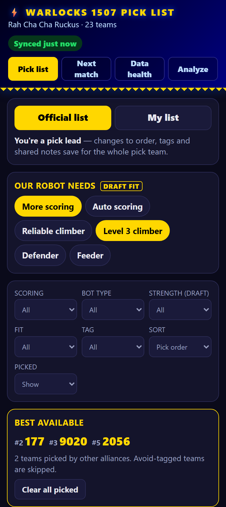
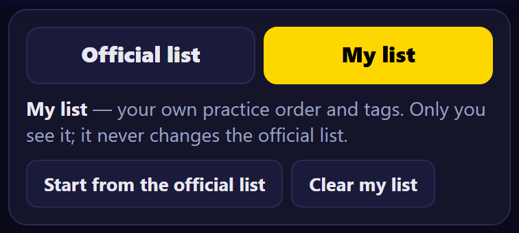
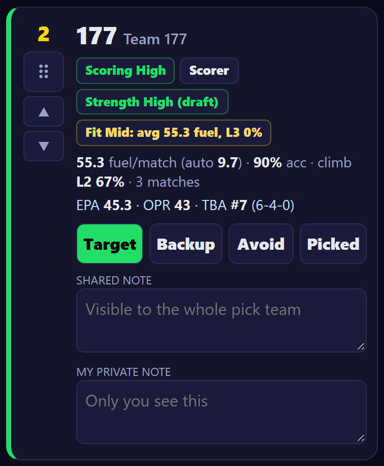
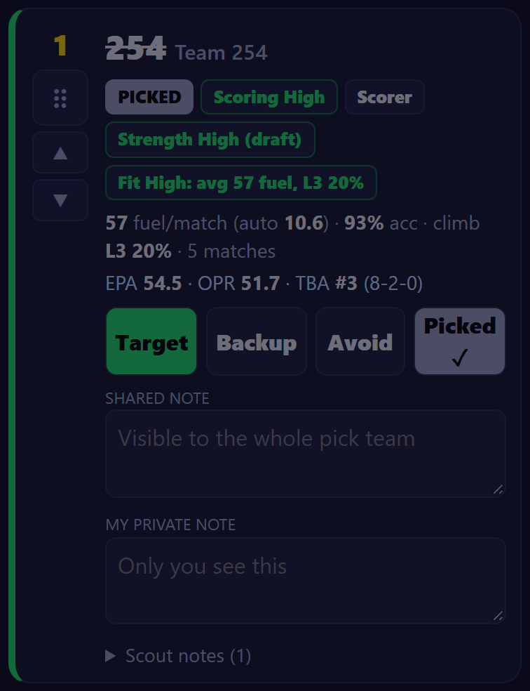
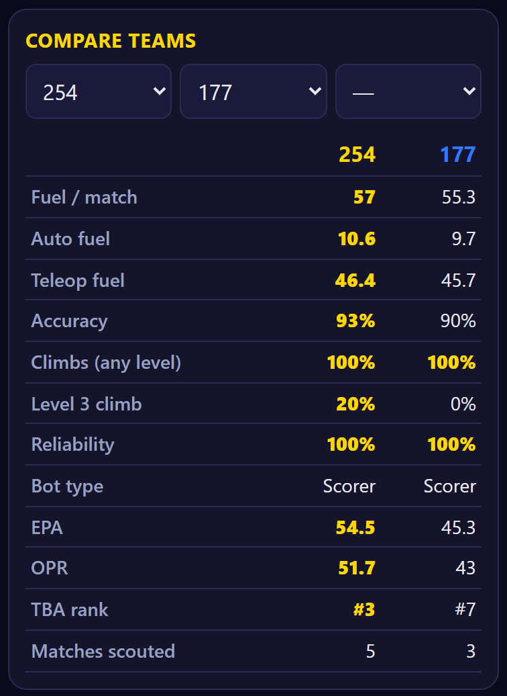
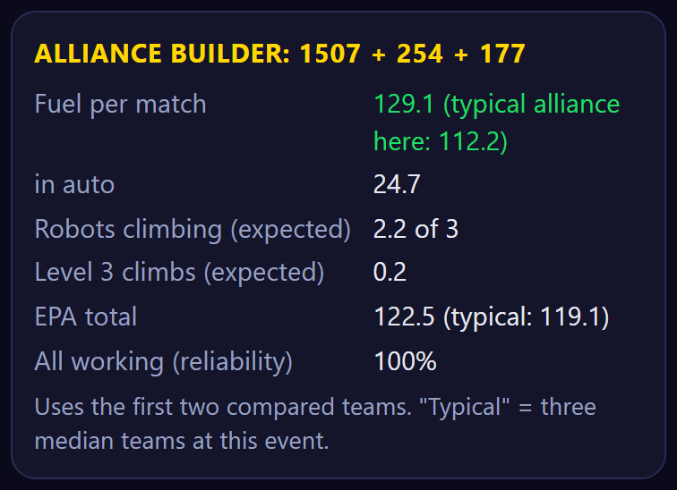
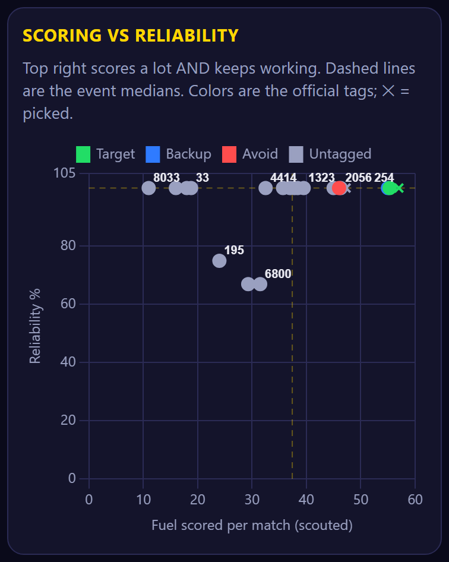
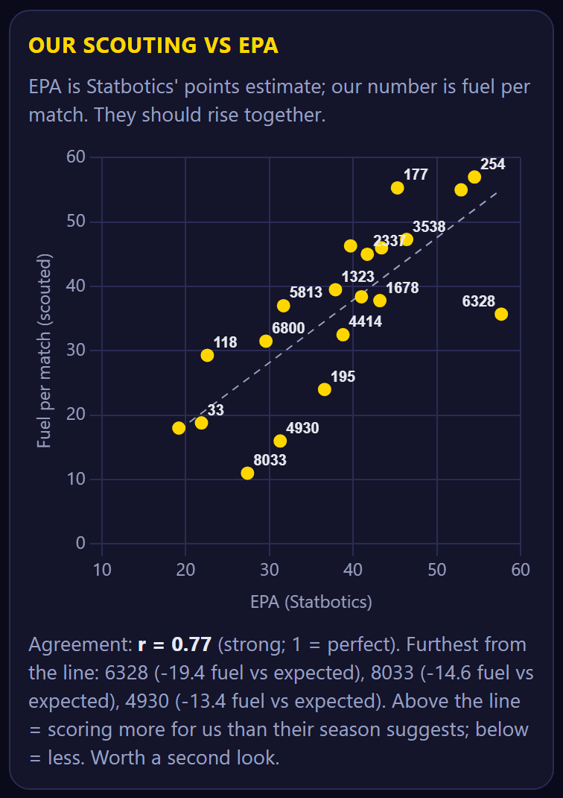

Open it on your phone:
https://script.google.com/a/macros/warlocks1507.com/s/AKfycbyIUDYSrwusIv5zlMygiPKP4vd6h6G7KjMVgBEERNaDfEY1PQQw-AWF3IR3n_S0lIlBjA/exec
The pick list collects everything our scouts record and turns it into a ranked list for alliance selection.
Screenshots in this guide use made-up sample data.
The green chip in the header says Synced N min ago. That's the last time the scan station pushed new scouting data. It turns red with "STALE" after 10 minutes. If you see that, tell the scouting lead (usually the phone tether at the scan station).

There are two lists. Switch between them at the top of the Pick list screen.
If nobody is on the Leads tab yet, everyone can edit the official list, and the page shows a warning.

Pick leads tap the gaps in our robot (More scoring, Auto scoring, Reliable climber, Level 3 climber, Defender, Feeder). Every team's Fit is worked out against those gaps, so set them before you sort by Fit.
Narrow the list by Scoring, Bot type, Strength, Fit or Tag, or hide picked teams. Sort by Pick order, EPA, Scouted fuel or TBA rank. Team 1507 isn't on the list, since we can't pick ourselves.

After the event, a pick lead taps Clear all picked (in the Best available box) to reset.

Tap Analyze in the header.
Choose up to three teams. The table lines up their scouted stats, EPA, OPR and TBA rank, and the best value in each row is gold. It starts with the top two of the official list.
Fuel each compared team scored in each of its matches, in the order they played. A gap means a no-show. This shows whether a team is improving, fading, or had one bad match that pulls its average down.
Us plus the first two compared teams:


One dot per team: fuel per match across, reliability up. Dashed lines mark the event medians.
Each bar runs from a team's worst match to its best, and the gold mark is its average.

Each dot compares a team's Statbotics EPA (its expected point contribution, from the whole season) with our scouted fuel per match. They should rise together along the dashed trend line.
Stacked bars for the top 16 teams:

Every sync, the Sheet keeps every record it has ever received, then rebuilds each team's numbers from scratch:
| Shown as | How it's worked out |
|---|---|
| Scoring High / Mid / Low | Teams ranked by average fuel per match and split into thirds for this event. |
| Climb (e.g. L3 40%) | Share of played matches that ended at that level or higher. |
| Reliability | 100% minus the no-show rate, minus the broke-down rate, minus half the dead-in-auto rate. |
| Bot type | The role scouts recorded most often (Scorer / Feeder / Defense). Hybrid if no role reaches 55% of matches. |
| Strength (draft) | Scoring rank × reliability, split into thirds. |
| Fit (draft) | How well the team covers the gaps ticked under "Our robot needs", scaled down for low reliability. High at 60% or more, Mid at 30% or more. |
| EPA, OPR, TBA rank | Fetched from Statbotics and The Blue Alliance. Shown alongside our numbers, never mixed into them. |
| You see | Do this |
|---|---|
| "This app is missing a Google permission…" | A box was unticked when you authorized. Go to myaccount.google.com/connections, remove "Warlocks 1507 Pick List", reopen the page and tick every box. |
| "You don't have access to the scouting Sheet" | Ask the scouting lead to share the Sheet with your exact @warlocks1507.com address as Editor. |
| Header says STALE | No sync for 10+ minutes. Tell the scouting lead; the scan station's phone tether is the usual cause. What you see is still the last good data. |
| "saved copy (couldn't refresh)" | Your phone lost its connection. You're seeing your last copy; it refreshes on its own once you're back online. |
| Tag, order or note buttons are greyed out | You're a viewer on the official list. Switch to My list, or ask to be added as a pick lead. |
| "Not scouted yet" on a card | The team is at the event but no scout record has synced yet. EPA and OPR still show. |
| Analyze: "Match-by-match data arrives with the first sync…" | Wait for the next sync from the scan station. |